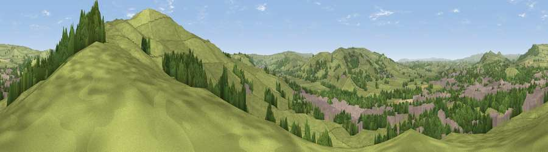

Viewpoint near Skipton
#17015 in England · top 28% of its area beats it · near SkiptonThe view, rendered

A 360° render of this exact spot computed from the terrain model, tree cover and land cover — summer colours, afternoon light, calibrated against photographs of famous viewpoints. Real trees, hedges and buildings will differ in detail.
The panorama
Grey silhouette: terrain skyline in each direction (720 bearings, Earth curvature and refraction included). Dashed green: skyline with trees (+15 m) and buildings (+8 m) as obstacles. Blue strip: how far the ground is visible on each bearing.
Where the view opens
Wedge length = distance to the farthest visible ground on that bearing (vegetation-aware). Rings at 10, 25 and 50 km.
What fills the view
67% grassland · 18% woodland · 14% built-up ·
Angular shares of the visible panorama (visual magnitude), not map area. Landscape diversity 0.39 (0–1 Shannon).
Key numbers
More beautiful places nearby
The staircase of upgrades: each row has a higher view potential than everything closer. Driving times are estimates from straight-line distance, calibrated against real road routing — check an actual route before setting out.
| Place | Direction | Drive | Score |
|---|---|---|---|
| Viewpoint near Low Bradley | SE · 1 km | ~3 min | 56.0 |
| Viewpoint near Low Bradley | E · 1 km | ~4 min | 66.3 |
| Viewpoint near Skipton | ENE · 2 km | ~5 min | 68.0 |
| Viewpoint near Embsay | N · 5 km | ~12 min | 74.5 |
| Cracoe Fell | N · 8 km | ~17 min | 75.1 |
| Viewpoint near Bewerley | NE · 19 km | ~32 min | 75.7 |
| Viewpoint near Bewerley | NE · 19 km | ~32 min | 76.8 |
| Viewpoint near Otley | ESE · 21 km | ~36 min | 77.5 |
53.95037, -2.00644 · source: screening · position refined by local search. Computed location — check access rights before visiting.